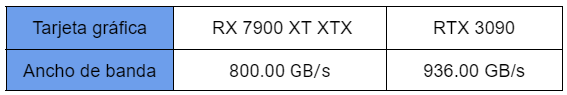

Tema 5: Tarjetas graficas
1- ¿Qué ancho de banda consigue la siguiente tarjeta: En cuanto a la cantidad de VRAM, esta estaría compuesta por 16GB a 20Gbps en formato GDDR6 con un bus de 320bits
Ancho de banda= 20Gbps x 320bits/8bits = 800 x 0,95= 760 MB/s
La tarjeta consegue 760 MB/s de ancho de banda
2- ¿A que frecuencia trabaja esta tarjeta gráfica: Contaría con 20GB de VRAM GDDR6 y un bus de 320 bit. El ancho de banda sería de 800GB/s.
frecuencia= 20GB x 320bits/800GBs = 8 Gbps
3- Encontrar, a partir de las especificaciones en internet, el ancho de banda de la RX 7900 XT XTX y de la RTX 3090.
¿Qué % de diferencia hay entre ellas?
Hay un 0,17% de diferencia
4- En https://powerboard.basemark.com/, la puntuación de la RX 7900 XT XTX es 26.097, la puntuación de la RTX 3090 es 20.480 ¿Qué % de mejora tiene la 7900?
La tarjeta 7900 es un 0,27% mejor que la RTX 3090
5- Encontrar precio de la 7900 y de la 3090.
-La RX 7900 XT XTX cuesta 1.029,89€
-La 3090 cuesta 2.192,13€
6- Pedir a chatGPT el ancho de banda de la 7900 XT y de la RTX 3090
-La tarjeta de la 7900 XT tiene 512 bits
-La tarjeta RTX 3090 tiene 936 GB/s
7- ¿Que % mejora de ancho de banda RX 7900 respecto a 3090 RTX?
La RTX 3090 es 81.25% mayor que el de la RX 7900.
8- Realizar un resumen del apartado del “Consumo” de las tarjetas gráficas. Por ejemplo como teoría: https://hardzone.es/tutoriales/rendimiento/caracteristicas-tarjeta-grafica/
El consumo de una tarjeta gráfica se refiere a la cantidad de energía eléctrica que utiliza la tarjeta mientras está en funcionamiento. El consumo de una tarjeta gráfica puede variar dependiendo de varios factores y puede tener un impacto en el rendimiento y en el sistema en general.
9- Selecciona una tarjeta gráfica con buen rendimiento/precio y razona por escrito esa selección.
GeForce RTX 3060 precio 390 €
Escogí esta tarjeta porque todo lo que ofrece esta bien por el precio que tiene
Está diseñada para juegos y aplicaciones de alto rendimiento, tiene un ancho de banda de memoria de 384GB/s y un TDP de 170W. Se puede conectar hasta pantallas de 8K, tiene la tecnología ray tracing y DLSS.